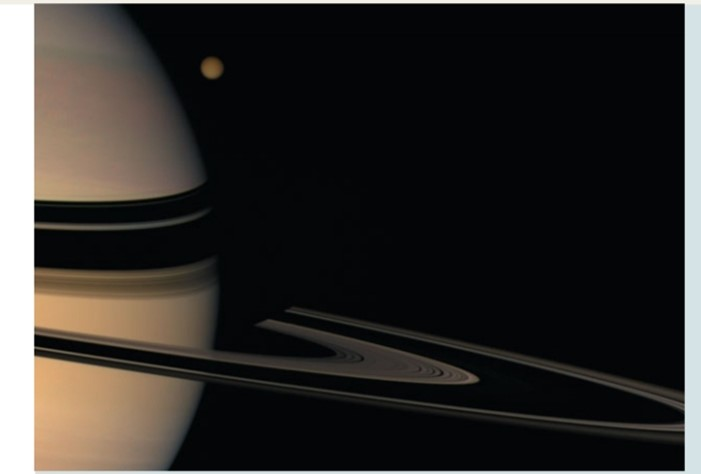
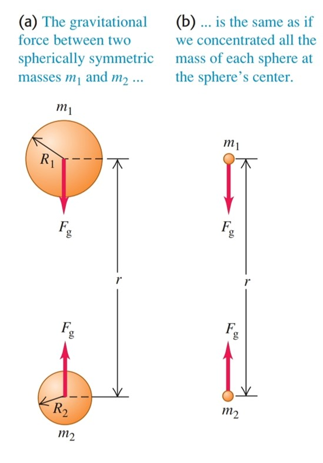

Lesson 2
GRAVITATION
Newton’s Law of Gravitation
The example of gravitational attraction that’s probably most familiar to you is your weight, the force that attracts you toward the earth. During his study of the motions of the planets and of the moon, Newton discovered the fundamental character of the gravitational attraction between any two bodies. Along with his three laws of motion, Newton published the law of gravitation in 1687.
The gravitational effect outside any spherically symmetric mass distribution is the same as though all of the mass were concentrated at its center.

Spherical and non spherical bodies:
The planet Jupiter and one of Jupiter’s small moons, Amalthea.
Determining the Value of G
To determine the value of the gravitational constant G, we have to measure the gravitational force between two bodies of known masses and at a known distance r. The force is extremely small for bodies that are small enough to be brought into the laboratory, but it can be measured with an instrument called a torsion balance, which Sir Henry Cavendish used in 1798 to determine G. a light, rigid rod shaped like an inverted T is supported by a very thin, vertical quartz fiber.
Two small spheres, each of mass are mounted at the ends of the horizontal arms of the t. When we bring two large spheres, each of mass to the positions shown, the attractive gravitational forces twist the T through a small angle. To measure this angle, we shine a beam of light on a mirror fastened to the T. The reflected beam strikes a scale, and as the T twists, the reflected beam moves along the scale.